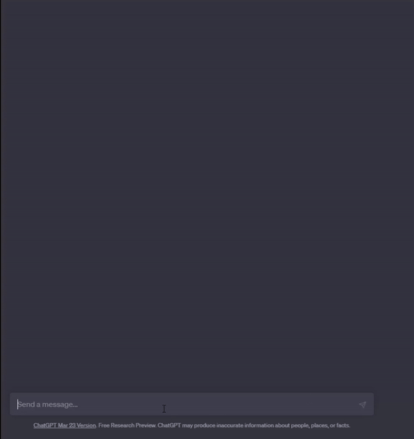

ChatGPT
ChatGPT - це чат-бот, який може відповідати на запитання, писати тексти та навіть допомогати у написанні коду. Він базується на нейромережі GPT (Generative Pre-trained Transformer) і навчається на великій кількості текстових даних.
Прототип ChatGPT було випущено 30 листопада 2022 року. Через детальність та ясність відповідей, його популярність виросла неймовірно швидко, хоча фактична точність цих відповідей підлягала критиці.
В основі прототипу лежить модель OpenAI GPT-3.5 — покращена версія GPT-3.
14 березня 2023 року OpenAI представили нову модель — GPT-4, яка стала доступною для користувачів платної версії ChatGPT Plus. В цій версії чат-бот може обробляти не тільки текст, а і зображення.
Як почати використовувати ChatGPT?
Для того, щоб почати використовувати ChatGPT, вам потрібно лише зареєструватися на сайті chat.openai.com та ви вже зможете користуватися OpenAI GPT-3.5 безкоштовно.
Для тих хто бажає використовувати GPT-4 (покращену версію) потрібно платити 20$ щомісяця.
